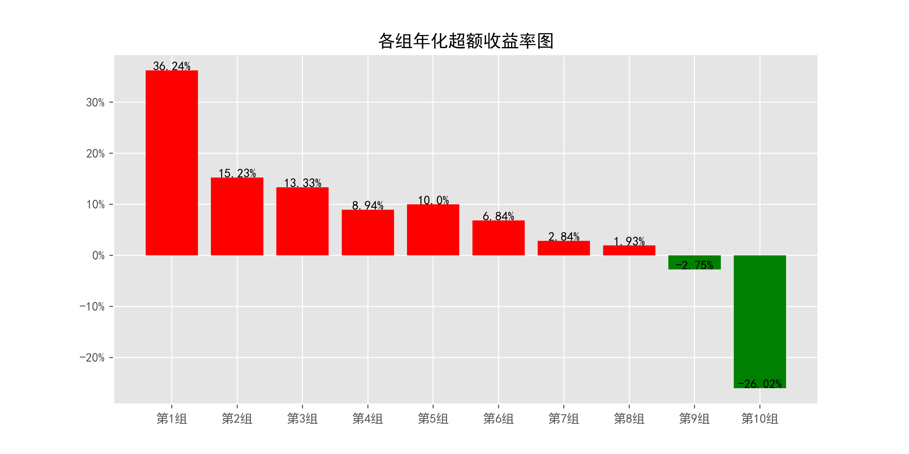
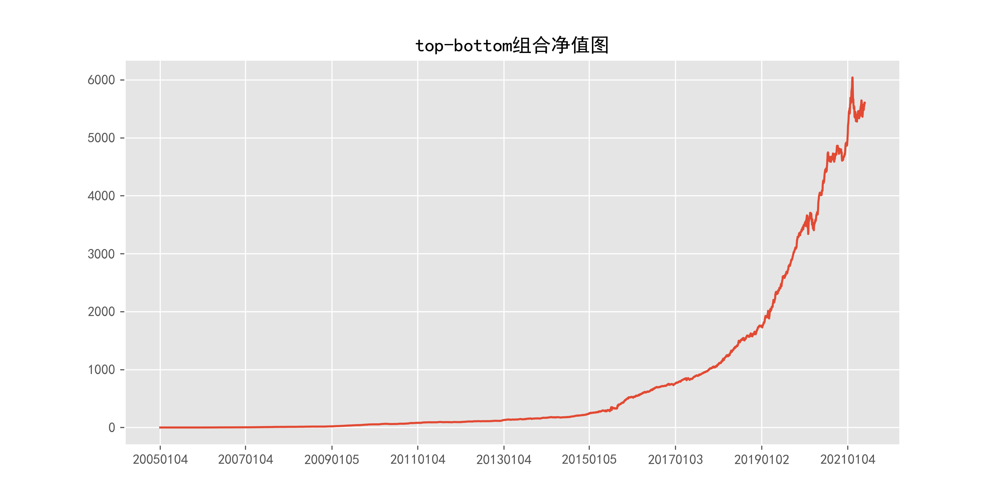
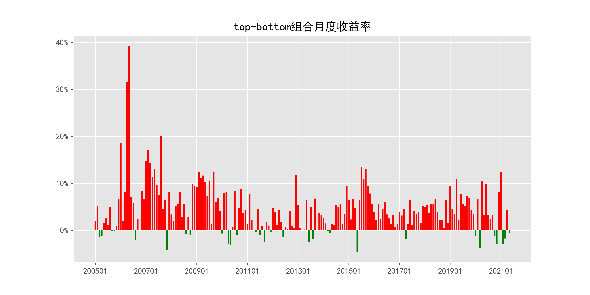

# VolumeHHI_quotely_5min
1_基本情况
1.1_概率密度图
1.2_描述性统计
| 因子换手率 | 样本数 | 均值 | 众数 | 标准差 | 偏度 | 峰度 |
|---|---|---|---|---|---|---|
| 15.51% | 9298720 | 0.0416 | 1.0000 | 3.44% | 11.42 | 186.51 |
| 最小值 | P05 | P25 | 中位数 | P75 | P95 | 最大值 |
|---|---|---|---|---|---|---|
| 0.0215 | 0.0268 | 0.0304 | 0.0347 | 0.0420 | 0.0700 | 2.2503 |
2_ICIR法检验结果
2.1_IC时序图
2.2_ICIR法检验数据
| IC均值 | IR值 | 显著比例 | 正显著比例 | 负显著比例 | 同向显著比例 | 反转显著比例 |
|---|---|---|---|---|---|---|
| -2.81% | -32.04% | 61.49% | 19.04% | 42.45% | 36.18% | 63.82% |
3_分组法检验结果
3.1_各组年化超额收益率图

3.2_各组净值图
3.3_Top-Bottom组合净值图

3.4_Top-Bottom组合月收益率图

3.5_Top-Bottom组合回撤图
3.6_分组法检验数据
| 组别 | 组合年化 | 超额年化 | 夏普比率 | 信息比率 | 最大回撤 | 仓位换手率 |
|---|---|---|---|---|---|---|
| TMB | -43.14% | -55.86% | -3.01 | -1.41 | 99.99% | 0.00% |
| 1 | -13.25% | -25.98% | -0.39 | -2.23 | 96.58% | 71.19% |
| 2 | 10.11% | -2.62% | 0.29 | -0.27 | 72.40% | 85.19% |
| 3 | 14.54% | 1.81% | 0.41 | 0.20 | 71.06% | 87.58% |
| 4 | 15.78% | 3.05% | 0.43 | 0.35 | 71.67% | 88.58% |
| 5 | 19.71% | 6.98% | 0.54 | 0.82 | 71.39% | 88.90% |
| 6 | 22.64% | 9.91% | 0.61 | 1.20 | 70.54% | 88.89% |
| 7 | 21.89% | 9.16% | 0.59 | 1.12 | 70.29% | 88.50% |
| 8 | 25.76% | 13.03% | 0.69 | 1.59 | 71.92% | 87.64% |
| 9 | 27.93% | 15.20% | 0.75 | 1.84 | 71.88% | 85.53% |
| 10 | 49.25% | 36.52% | 1.34 | 4.02 | 70.90% | 78.19% |
| 组别 | 日均收益率 | 日胜率 | 日盈亏比 | 月均收益率 | 月胜率 | 月盈亏比 |
|---|---|---|---|---|---|---|
| TMB | -0.22% | 37.71% | 0.80 | -4.35% | 14.72% | 0.30 |
| 1 | -0.03% | 52.53% | 0.86 | -0.63% | 44.67% | 1.03 |
| 2 | 0.06% | 55.75% | 0.86 | 1.22% | 57.36% | 1.05 |
| 3 | 0.08% | 56.42% | 0.86 | 1.60% | 57.87% | 1.12 |
| 4 | 0.09% | 56.72% | 0.85 | 1.71% | 57.36% | 1.16 |
| 5 | 0.10% | 57.00% | 0.86 | 2.01% | 57.87% | 1.22 |
| 6 | 0.11% | 56.85% | 0.87 | 2.21% | 58.38% | 1.25 |
| 7 | 0.11% | 56.85% | 0.87 | 2.16% | 55.84% | 1.37 |
| 8 | 0.12% | 56.95% | 0.88 | 2.44% | 56.35% | 1.43 |
| 9 | 0.13% | 56.47% | 0.90 | 2.58% | 57.36% | 1.42 |
| 10 | 0.19% | 57.07% | 0.95 | 4.06% | 61.93% | 1.53 |